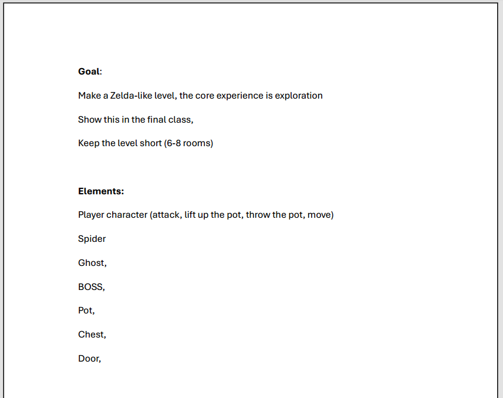
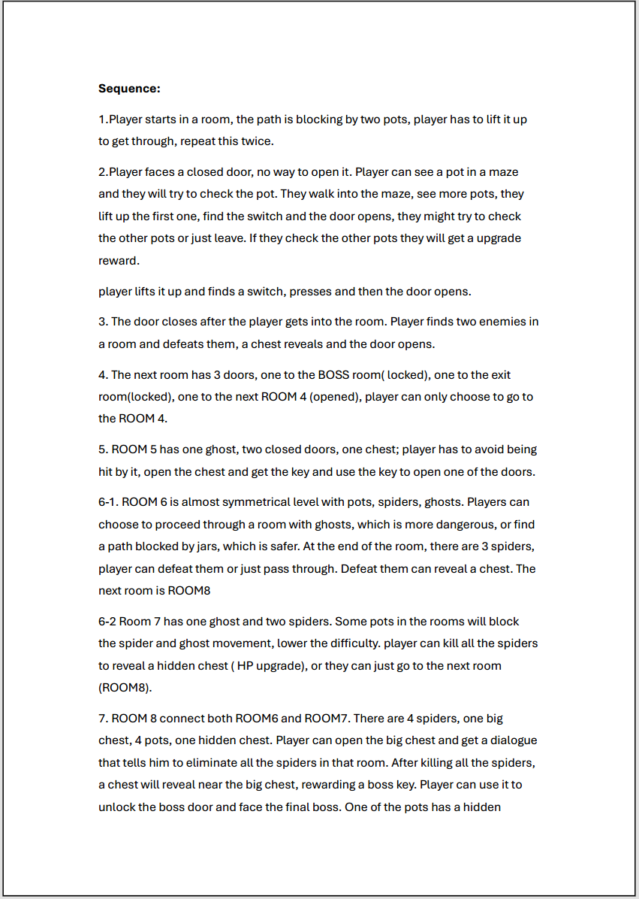
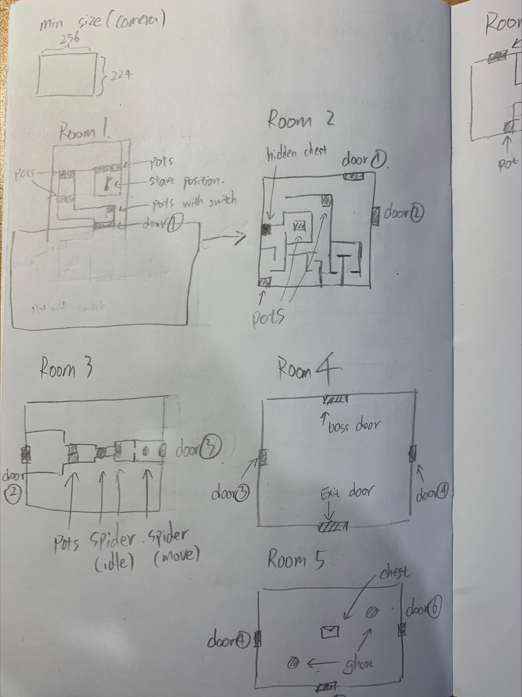
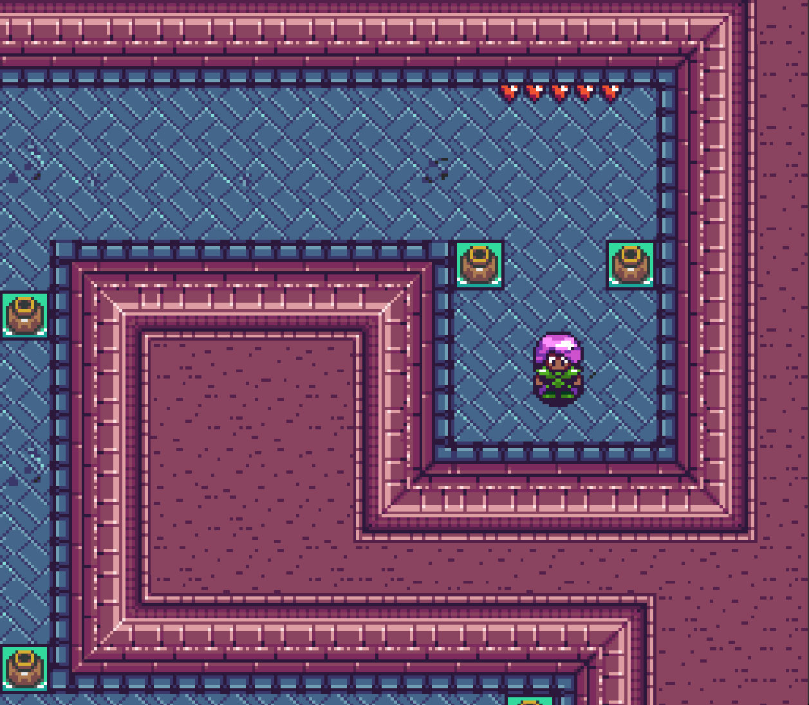
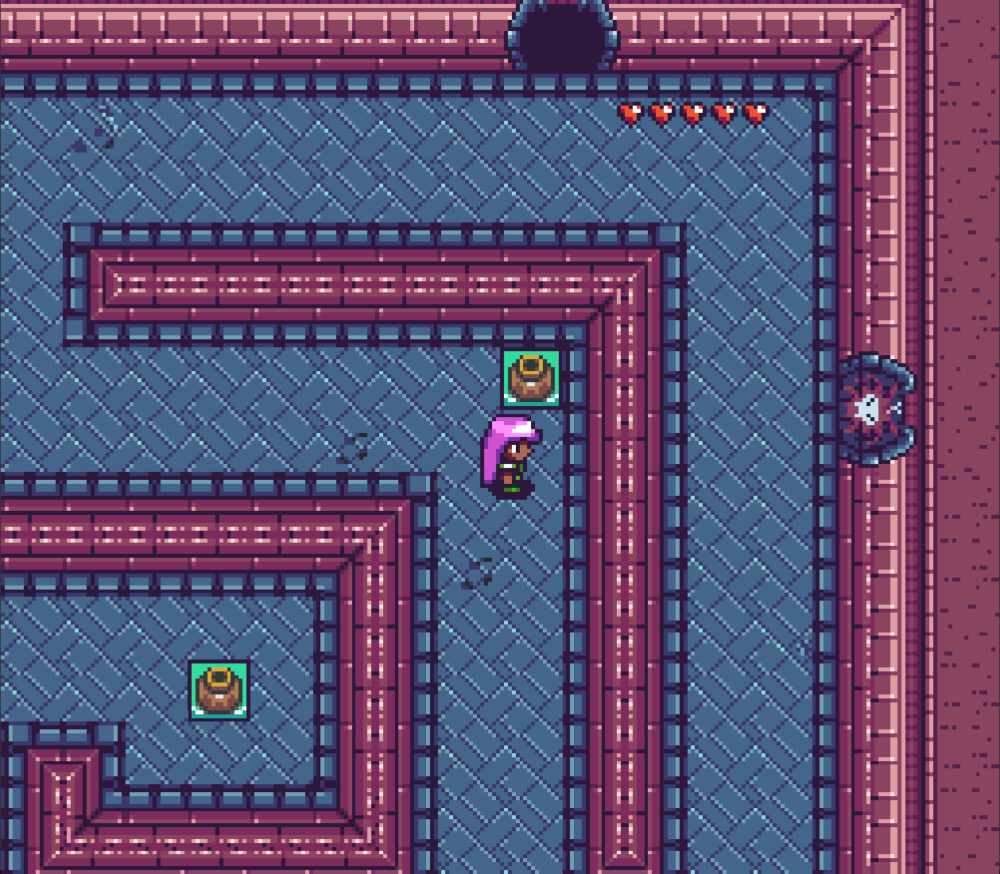
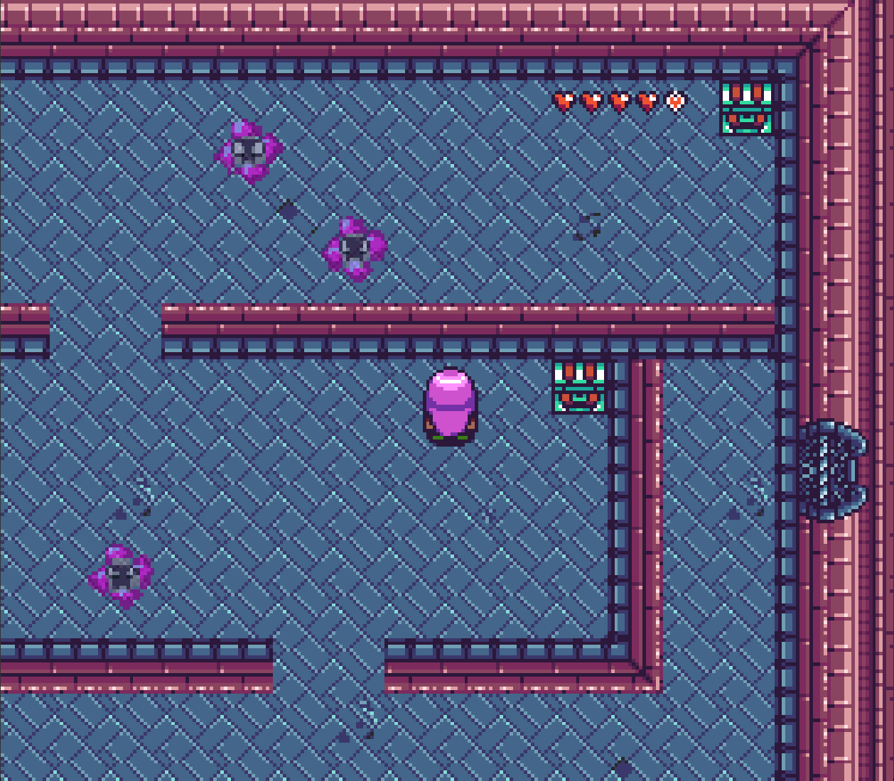
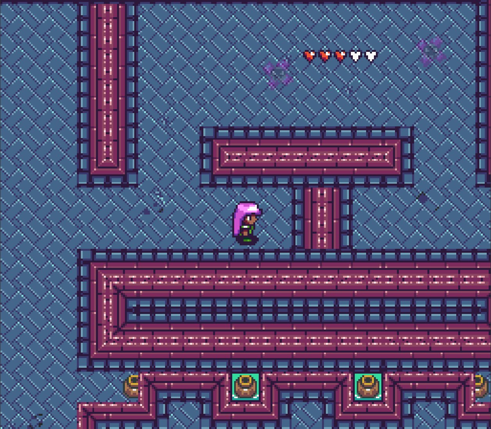
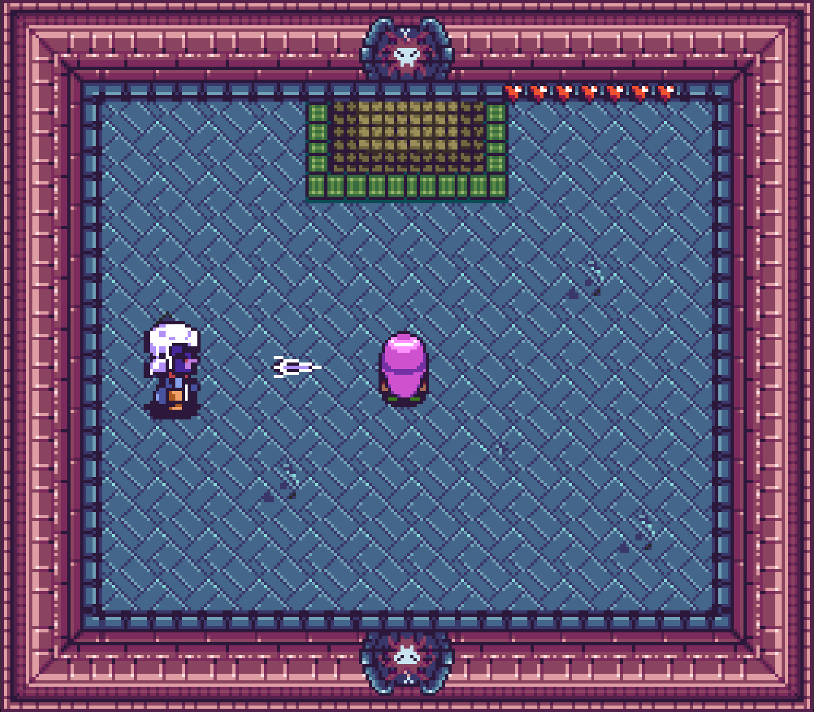

Level Design
A Dungeon-01
Phaser Game - A level focused on exploration and reveal the hidden reward
Role
Level Design
Tools
Tiled
Status
Completed
Focus
Exploration
Credits
Individual Project
Overview
This project is a top-down action-adventure level focused on exploration. The level is built around hidden treasure chests that are revealed through player exploration and interaction with the environment.
Design Goal
The goal of this level is to create a short (3–5 minute) dungeon experience inspired by classic Zelda-style gameplay. The level is designed to encourage exploration through systems such as character upgrades, hidden treasure chests, and combat encounters.
Design Process
1
List Available Elements

At this stage, I define the core elements of the level while also evaluating the available development time and scope. Since this project was built from scratch, there was flexibility to introduce new mechanics. However, due to time constraints, it was important to balance the deadline with feasibility I focused on a small set of core mechanics, such as combat, character upgrades, player interactions with objects, and revealing hidden chests, to support the design goal, while avoiding adding too many extra features that could impact completion.
2
Sequences

At this stage, I define a sequence to guide the player’s learning and progression through the level. The focus is on gradually introducing core mechanics and helping the player understand how the game works. Early on, the player learns how to interact with objects. The level then introduces the idea of hidden chests and encourage player to explore the area. As the level progresses, the player learns that objects can also be used against enemies, followed by combat encounters that teach the basics of fighting. Enemy placement is used to create a gradual difficulty curve, while also reflecting player progression through exploration.
3
Layout Sketches

At this stage, I translate the sequence into layout sketches to test whether the overall structure makes sense. I look at whether the player might be forced into unnecessary backtracking, and whether the layout feels clear and easy to navigate. I also evaluate whether exploration points are noticeable enough, so players can recognize unusual areas and investigate them. At the same time, I evaluate the pace between exploration and combat, including how many enemies and hidden chests are placed throughout the level.
4
Implementation and Iteration
At this stage, I implement and iterate on the level in Tiled based on the layout sketches. The focus is on testing whether the level actually supports the exploration-driven design goal. I adjust factors such as camera distance, level scale, and collision. Camera distance and level size affect whether players can notice points of interest as they move through the level. I also test collision to determine the minimum width a path needs in order for the player to move through it. This becomes a baseline reference for defining the overall scale and proportions of the level.
Some design approaches
Teaching Through Gameplay
The level is designed to introduce core mechanics without explicit instructions. Players are first required to pick up a pot to progress, encouraging interaction with the environment. This interaction is reinforced in a second instance, allowing players to practice in a low-pressure situation. Finally, the mechanic is applied in a meaningful context, where the player must use the pot to reveal a hidden mechanism and move forward. This follows a “teach, practice, apply” structure, guiding the player through gameplay rather than explanation.
Emergent Learning through Interaction
Learning through interaction is used to introduce the offensive use of objects. By placing a pot as an obstacle, the player is required to pick it up to progress. An enemy is then positioned directly in front of the player, naturally prompting them to throw the object. This creates a situation where the player discovers that objects can be used as weapons through their own actions, reinforcing learning without explicit guidance.





Reflection
Through this project, I learned that exploration-driven level design cannot rely only on assumptions about how players will behave. It is important to test the level and observe how players actually interact with it. During playtesting with classmates, only 4 players engaged with the level in a way that matched the intended exploration-focused experience. Some players focused mainly on combat, while others did not even realize that hidden chests existed. This highlighted the importance of allocating time for playtesting within the overall design process, ensuring that player behavior can be observed and design decisions can be adjusted accordingly.